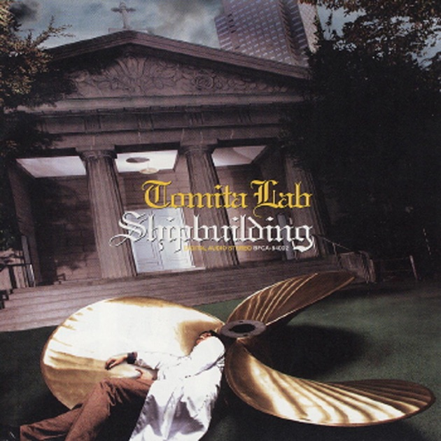
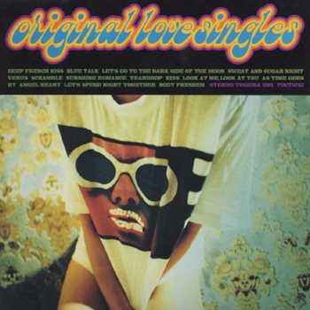
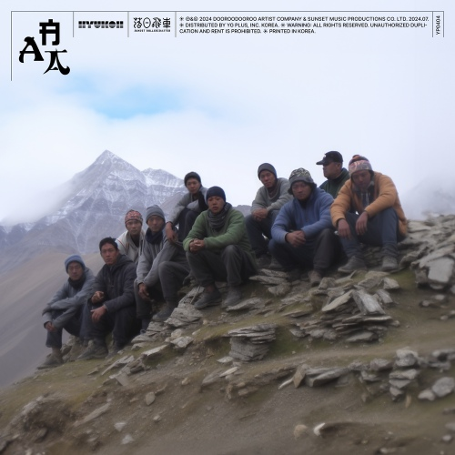
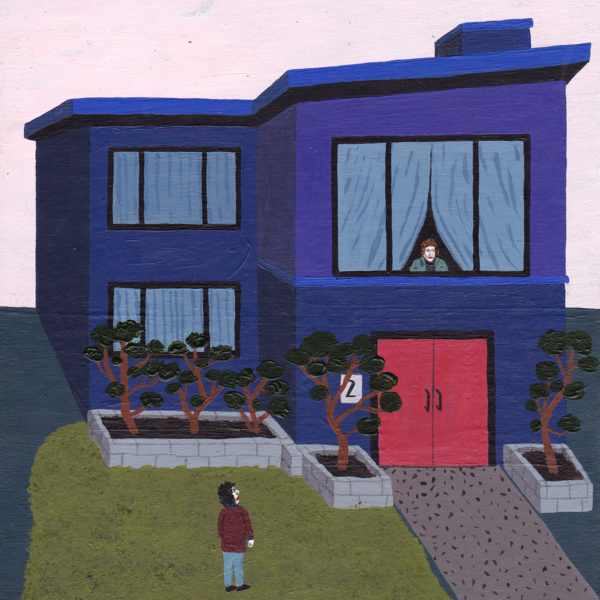

Soundtrack
1~2월

Nemuri No Mori
Tomita Lab & Hanaregumi
온수 매트에서 고양이 옆에 두고 엎드려서 그림 그릴 때마다 이 노래를 항상 들었었다. 내가 제일 좋아하는 노래 top5 중 하나다
3~4월

Asahi No Ataru Michi - As Time Gose By
Original Love
이 노래도 내가 제일 좋아하는 노래 top5안에 든다. 90년대로 시간여행하는 느낌이고 바닷가에서 드라이브 할 떄 듣기 좋은 노래인 것 같다.
5~6월

３号線
Ryuusennkei & Yasuyuki Horigome
내가 굉장히 좋아하는 아티스트 두명이기 때문에 안좋을 수 없는 노래다.ㅜㅜ 낮에 햇빛 맞으면서 들으면 엄청 힐링된당
7~8월

Do Nothing
혁오 & Sunset Rollercoster
덥고 무기력 할 때마다 이 노래 들으면 몸이 가벼워지는 느낌이 들어서 자주 들었다. 노래 가사는 아무것도 하지말라고 하지만 나는 맨날 이 노래 들으면서 방청소했다
9~10월
모든 것이 꿈이었네
250
갑자기 250에 꽂혀서 막 찾아보다가 이 노래에 빠지게 됐다. 먼가 위로받는 느낌이다 멍 때릴때 듣기 좋은 노래다. 가사에 몰입해서 들으면 나도 꿈꾼것 같은 느낌이 든다..
11~12월

겨울 (선우정아 & 유라)
Cosmic Boy
중학생때 부터 매년 겨울마다 이 노래를 꾸준히 들어오고 있다. 들으면 마음이 따뜻해진다 들을 때마다 눈오는날 장갑끼고 따뜻한 붕어빵을 먹는 상상을 한다.